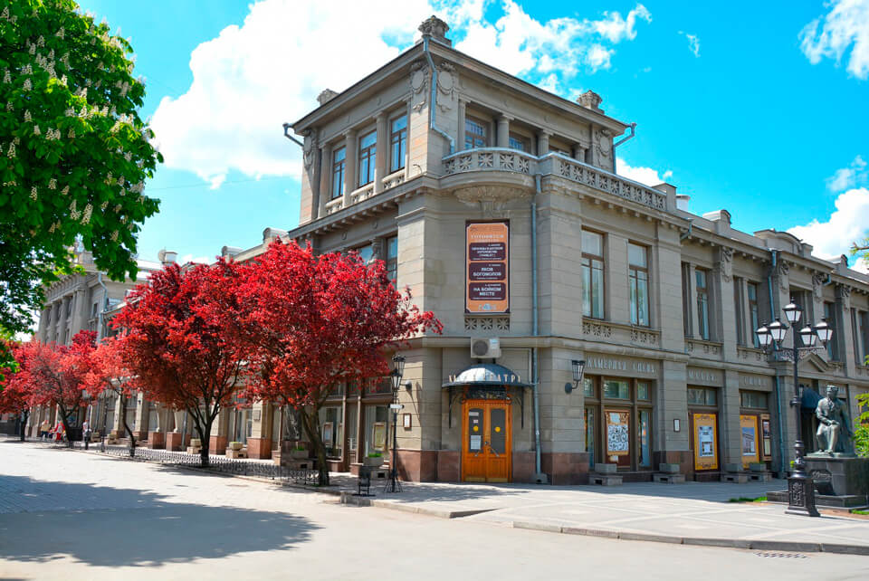
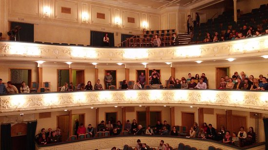

Крымский академический русский драматический театр имени М. Горького — старейший театр юга России. Его история насчитывает два столетия. Истоки театра уходят к 1821 году. Архивные документы и краеведческая литература повествуют, что его основателем был московский купец Волков, живший в Симферополе некоторое время по совету врачей.
В 40-х гг. XIX в., театр был переоборудован: оштукатурены стены, сделан подъезд, пристроены крытые коридоры, переделан партер и установлены ложи. Его стали называть «театром трех Александров»: Александр Самойлов директор казенной мужской гимназии, брат известного актера Александринского театра, Александр Казначеев, предводитель дворянства, давший на постройку значительные средства, и Александр Серов, молодой товарищ прокурора, страстный любитель искусства (в будущем известный композитор и музыкальный критик). Именно «три Александра» приложили огромные усилия к улучшению состояния театрального здания.
- черная комедия «Сиротливый Запад»
- детективная комедия «Фредди»
- пьеса «Эти свободные бабочки»
- сказка «Красная шапочка и серый волк»
- драма «Варшавская мелодия»
- комедия «Женитьба Белугина»
- музыкально-драматическая композиция «Метель»